BALL KEEP
Superflex Dynasty · Superflex Redraft
Fun tape · not news
The X
Memes, shitposts, and the jokes the football desk actually laughs at. Pulled from X via Google News — pictures when the wire carries them. Baseball and PitchKeep have their own X pages.
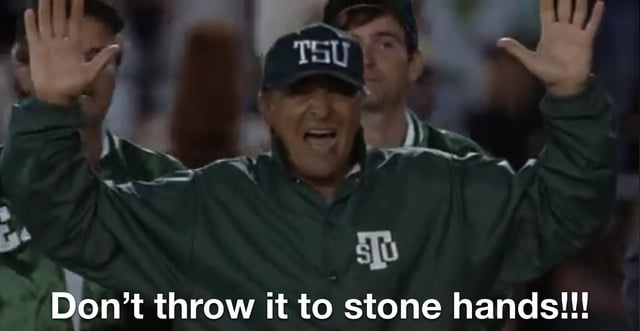
RedditWhat pops into my head if I even think about drafting Marvin Harrison Jr again.
submitted by /u/rpm319 [link] [comments]
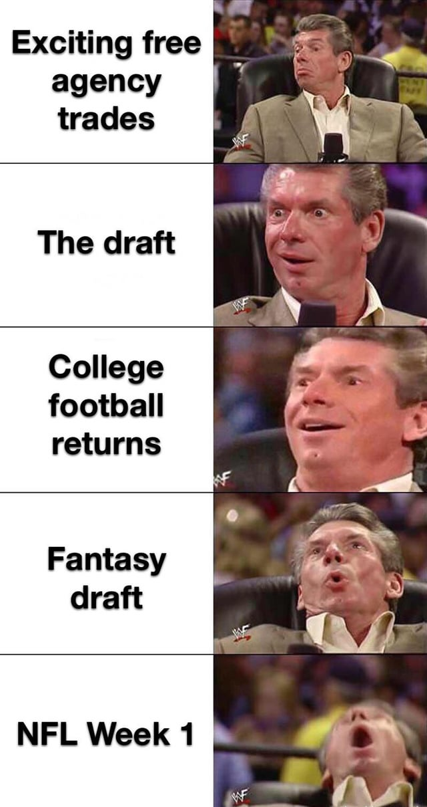
RedditThe Yearly Cycle Fulfills
submitted by /u/ISpyM8 [link] [comments]
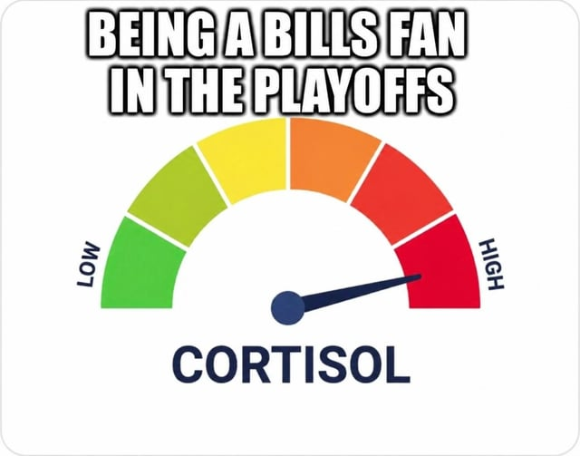
RedditBeing a Bills fan in the playoffs
submitted by /u/CloudStrife012 [link] [comments]
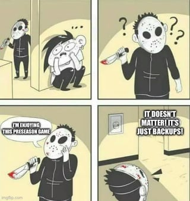
RedditImagine liking football
Do people genuinely not know other people understand preseason is practice? submitted by /u/Ml_lD [link] [comments]
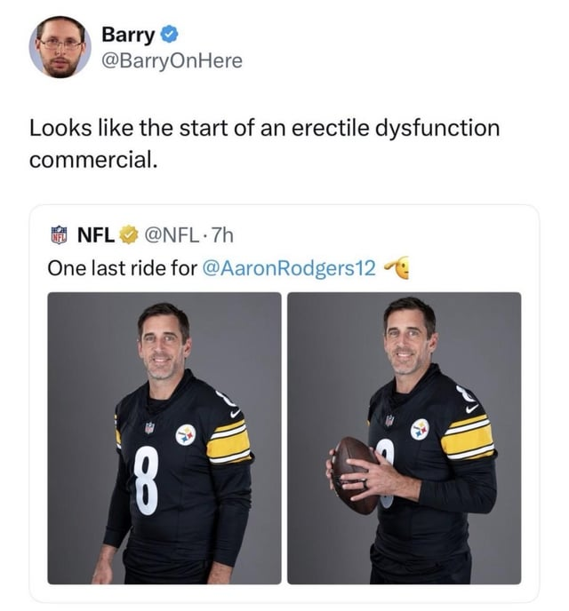
RedditThis is on point
submitted by /u/Senior-Violinist-684 [link] [comments]
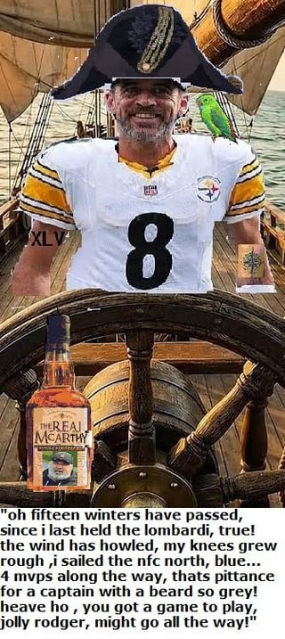
Redditjolly rodger
submitted by /u/Due_Anywhere9100 [link] [comments]
 x.com
x.comNFL veteran RB Nick Chubb has announced his retirement. instagram.com/p/DcUtVYNkT1p/…
NFL veteran RB Nick Chubb has announced his retirement. instagram.com/p/DcUtVYNkT1p/… x.com
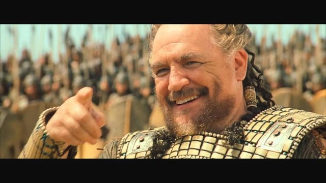
RedditWatching Mendoza
Throw that pick-six submitted by /u/figgis_agency [link] [comments]
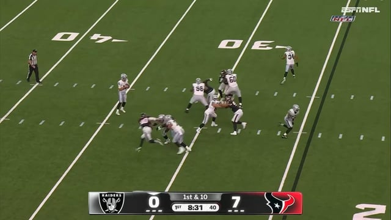
RedditMendoza and Cousins really are clones!!
submitted by /u/aworldbetweenlinks [link] [comments]
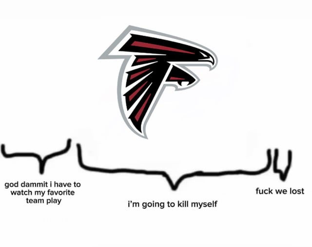
RedditLife as a Falcons fan for my entire life
submitted by /u/cxmonbaby [link] [comments]
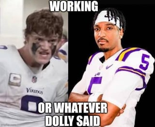
RedditJJ and Jayden come together to sue Dolly Parton
submitted by /u/RelationshipStock254 [link] [comments]
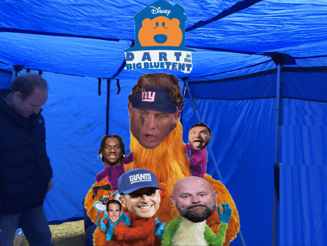
RedditNostalgia Is In
submitted by /u/HighGuysImHere [link] [comments]
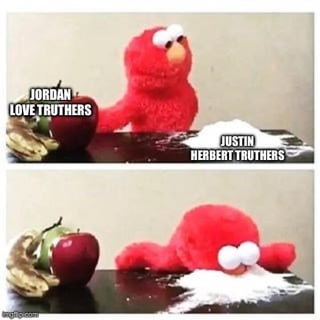
RedditMike McDaniel is a Hell of a Drug
submitted by /u/KingJohnBasedow [link] [comments]
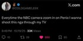
RedditThis dude COLDGAMELEEK was one of a kind
submitted by /u/cxmonbaby [link] [comments]
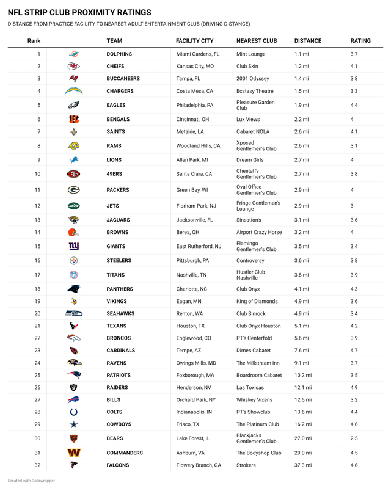
RedditThe practice field proximity rankings that actually matter
submitted by /u/Tacocat2112 [link] [comments]
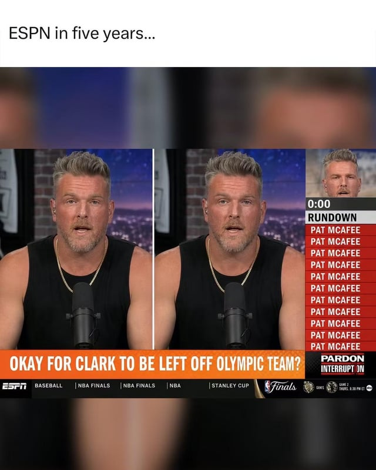
RedditPat Mac Attack
100% stole the meme. Title is organic baby. submitted by /u/SpiffyBlizzard [link] [comments]
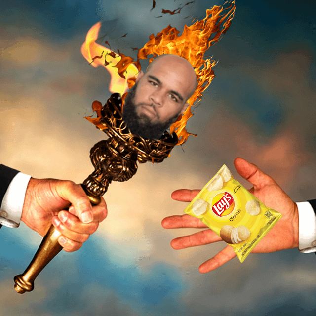
RedditTrading Players who are 30+ in Dynasty Be Like
Unc's dynasty value = fried potatoes submitted by /u/B1gChungus42069420 [link] [comments]
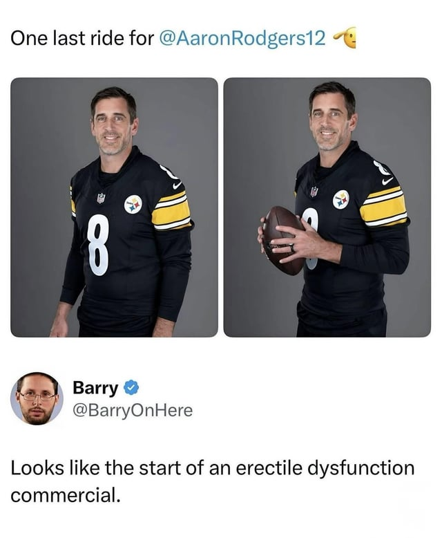
RedditNow we can watch ads for ED live during football games.
submitted by /u/Justthetippliz [link] [comments]
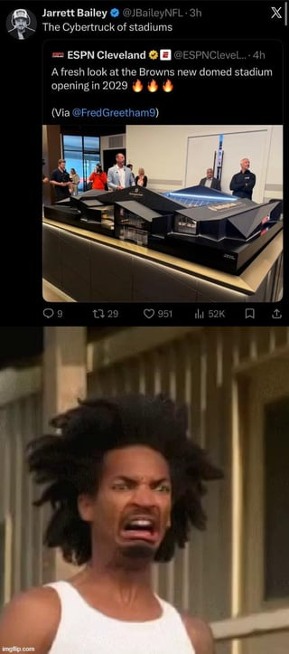
RedditBrother ewww!
submitted by /u/PJ-The-Awesome [link] [comments]
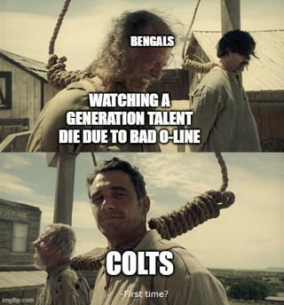
RedditJoe Burrow may actually die with that tissue paper O-Line
submitted by /u/Assortedwrenches89 [link] [comments]
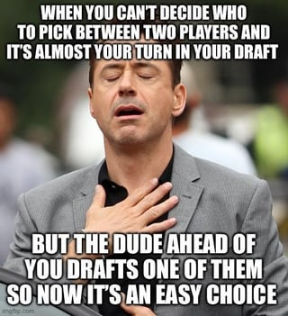
RedditWhat a relief
submitted by /u/LeavesInsults1291 [link] [comments]
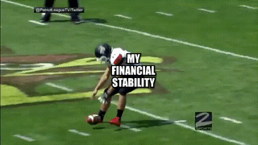
RedditOof ouch owie
submitted by /u/LavenderMidwinter [link] [comments]
 x.com
x.comBarcelona fans this weekend
Barcelona fans this weekend x.com
 x.com
x.comJason Harmon (@JasonHarmonNFL) / Posts
Jason Harmon (@JasonHarmonNFL) / Posts x.com
 x.com
x.comThe Cleveland Browns QB room
The Cleveland Browns QB room x.com
 x.com
x.comTime to check in on the Cleveland Browns QB competition 🔥
Time to check in on the Cleveland Browns QB competition 🔥 x.com
 x.com
x.comJosh Allen to Keon Coleman for the first touchdown at Highmark Stadium!
Josh Allen to Keon Coleman for the first touchdown at Highmark Stadium! x.com
 x.com
x.com5 minutes into Week 1 of the NFL preseason and we already got a generational meme. This season is gonna be an all-timer 😭
5 minutes into Week 1 of the NFL preseason and we already got a generational meme. This season is gonna be an all-timer 😭 x.com
 x.com
x.comJayden Daniels has reportedly asked teammates to avoid high-fiving him this season after touchdowns out of respect for his jersey number. Commanders players and coaching staff will
Jayden Daniels has reportedly asked teammates to avoid high-fiving him this season after touchdowns out of respect for his jersey number. Co
 x.com
x.comLIVE LOOK-IN on the Browns QB competition between Shedeur Sanders and Deshaun Watson. 🤣 Shedeur has a 23% chance of being the Week 1 starter.
LIVE LOOK-IN on the Browns QB competition between Shedeur Sanders and Deshaun Watson. 🤣 Shedeur has a 23% chance of being the Week 1 starter
 x.com
x.comThe Bills new alternate uniforms…
The Bills new alternate uniforms… x.com
 x.com
x.comYahoo Fantasy Sports (@YahooFantasy) / Posts
Yahoo Fantasy Sports (@YahooFantasy) / Posts x.com
 x.com
x.comIt was destiny
It was destiny x.com
 x.com
x.com“Unnecessary roughness on the Texans for breathing in Patrick Mahomes’ personal bubble…15-yard penalty, automatic first-down”
“Unnecessary roughness on the Texans for breathing in Patrick Mahomes’ personal bubble…15-yard penalty, automatic first-down” x.com
 x.com
x.comSheena Quick (@Sheena_Marie3) / Posts
Sheena Quick (@Sheena_Marie3) / Posts x.com
 x.com
x.comZach Hicks (@ZachHicks2) / Posts
Zach Hicks (@ZachHicks2) / Posts x.com